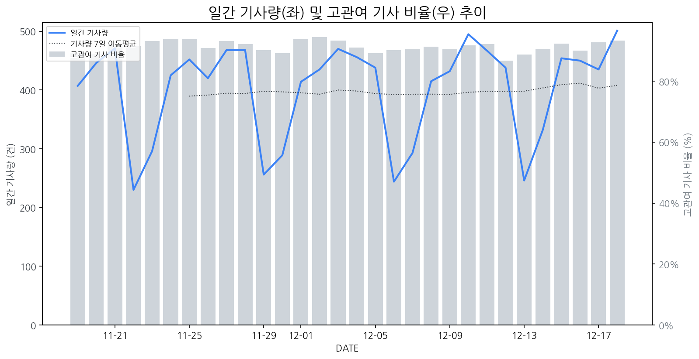

1
시장 활동 지표
기사량 추세 & 이상 징후 탐지
시장의 '전체 기사량'이 평소보다 비정상적으로 급증했는지(Spike)를 차트로 확인하고, LLM이 분석한 급등의 핵심 원인을 파악할 수 있음

고관여 기사란? 산업 연관 키워드로 수집된 기사들 중 디스플레이 키워드에 가중치를 반영하여 도출된 관련성 높은 기사
수집된 기사 수 (2025-12-18)
501
+7% WoW
기사량 변동 수준 (7일 이동평균 대비)
±6.7% 이하
2
오늘의 키워드
급격한 관심 ↑, 주목해야 할 키워드
1
디스플레이
+3.6σ
자동차용 OLED 시장 확대와 LG디스플레이 흑자전환 기대감이 디스플레이 산업 주목도를 높였다.
Related Metrics
금일 언급량: 27, 전일 대비: +15
Interpretation
OLED 경쟁력 강화 및 수익성 개선 기회
Next Step
'디스플레이' 관련 상세 기사 및 경쟁사 반응 모니터링
2
udc
+3.3σ
LG이노텍이 CES에서 '디스플레이에 가려진' 차량용 UDC를 공개하며 시장의 주목을 받았습니다.
Related Metrics
금일 언급량: 8, 전일 대비: +8
Interpretation
차량용 디스플레이 시장 확대 기대
Next Step
'udc' 관련 상세 기사 및 경쟁사 반응 모니터링
3
도우인시스
+1.9σ
폴더블폰 UTG 독점 공급 소식으로 기술력과 시장 성장 기대감이 증폭되었습니다.
Related Metrics
금일 언급량: 4, 전일 대비: +4
Interpretation
기술력 인정, 폴더블 시장 지배력 강화
Next Step
'도우인시스' 관련 상세 기사 및 경쟁사 반응 모니터링
4
기아
+1.6σ
기아 PV5의 유럽 '올해의 밴' 수상 소식이 소상공인 및 전기 밴 시장 확대 가능성을 시사하며 주목받고 있습니다.
Related Metrics
금일 언급량: 4, 전일 대비: +4
Interpretation
차량 디스플레이 수요 증가 기대
Next Step
'기아' 관련 상세 기사 및 경쟁사 반응 모니터링
3
실시간 Risk 키워드
경계해야 할 시그널 탐지
특정 토픽의 부정 감성 점수가 급등할 때 이를 즉시 탐지하고, "근거 기사" 링크를 통해 리스크의 실체를 빠르게 파악할 수 있음
키워드 분석 결과, 오늘은 걱정할 만한 하락 신호가 없습니다. (부정 언급량 변화: +1.5σ 이내)
4
주요 이벤트 모니터링
실시간 산업 동향 파악을 위한 주요 활동
최근 발생한 주요 기업들의 신제품 출시, 투자 등 주요 이벤트를 제공하여 매일 경쟁사 동향을 확인할 수 있음
2차전지 관련 종목 중 일부는 상승세를 보였으나, 다른 일부는 하락세를 기록했습니다. 이는 2차전지 시장의 변동성이 크다는 것을 시사합니다.
Impact
2차전지 시장의 변동성은 디스플레이 소재 및 부품을 공급하는 기업들의 실적과 투자 결정에 영향을 미칠 수 있습니다.
Next Step
디스플레이 제조 기업은 2차전지 시장 동향을 면밀히 주시하며 안정적인 부품 공급망 확보 및 사업 다각화를 고려해야 합니다.
2026년 반도체 산업은 호황을 누릴 것으로 예상되지만, 스마트폰 시장은 수요 부진으로 인해 디스플레이 시장 역시 어려움을 겪을 것으로 전망됩니다. 이는 전반적인 IT 기기 수요 둔화와 스마트폰 교체 주기 장기화 등이 복합적으로 작용한 결과입니다.
Impact
스마트폰 디스플레이 패널의 수요 감소 및 단가 하락 압력이 가중되어 디스플레이 제조 기업의 수익성에 부정적인 영향을 미칠 수 있습니다.
Next Step
스마트폰 외 차량용 디스플레이, VR/AR 기기 등 신규 시장 발굴 및 기술 개발을 통해 사업 포트폴리오를 다각화해야 합니다.
우주일렉트로닉스의 신임 대표이사로 노영백 씨가 선임되었습니다. 이번 인사는 회사의 미래 전략과 시장 대응에 대한 중요한 변화를 예고합니다.
Impact
새로운 경영진의 비전과 전략에 따라 우주일렉트로닉스의 디스플레이 부품 시장 내 입지 변화 및 경쟁 구도에 영향을 줄 수 있습니다.
Next Step
경쟁사로서 우주일렉트로닉스의 새로운 리더십 하에서의 사업 방향과 기술 개발 동향을 면밀히 주시하며, 시장 변화에 대한 자체 경쟁력 강화 방안을 검토해야 합니다.
2025 세계 스마트제조박람회가 AI와 결합한 새로운 제조 기술을 선보이며 개막했습니다. 이는 제조 산업 전반의 혁신적인 변화를 예고합니다.
Impact
이번 박람회에서 showcased된 AI 기반 스마트 제조 기술은 디스플레이 생산 공정의 효율성, 정밀도, 자동화를 크게 향상시켜 차세대 디스플레이 경쟁력을 강화할 것으로 예상됩니다.
Next Step
디스플레이 제조 기업은 AI 기반 스마트 팩토리 솔루션 도입 및 관련 기술 R&D 투자를 통해 생산성 향상 및 원가 절감을 도모해야 합니다.
마이크론의 시간외거래에서 주가가 급등하며 뉴욕 증시 투자자들의 환호를 이끌어냈습니다. 이는 오라클의 실적 발표 결과와 함께 시장의 주목을 받고 있습니다.
Impact
마이크론의 긍정적인 실적은 반도체 시장 전반의 투자 심리를 개선시키고, 특히 메모리 반도체 수요 및 가격 상승 기대감을 높여 디스플레이 시장에도 긍정적인 영향을 미칠 수 있습니다.
Next Step
디스플레이 제조 기업은 마이크론의 실적 호조를 계기로 메모리 반도체 공급망의 안정화 및 가격 변동성을 주시하며, 고성능 디스플레이 제품 포트폴리오 강화 전략을 점검해야 합니다.
5
지금 주목해야 할 뉴스 TOP 3
PCB(FPCB) 관련주, '봄날의 햇살' 우리바이오·네오티스·이수페타시스·...
로컬 요약 모델 실행 중 오류 발생: 제목을 클릭하여 기사 전문을 확인할 수 있습니다.
LG, 새 차량용 설루션·브랜드 전략 공개…질적 성장 '잰걸음'
로컬 요약 모델 실행 중 오류 발생: 제목을 클릭하여 기사 전문을 확인할 수 있습니다.
무진전자 인수 효과 본격화…엘티씨, 장비까지 직접 판다
엘티씨는 코스닥시장에 상장한 반도체·디스플레이 소재 기업으로, 주력 제품은 반도체 공정에 사용되는 PR(포토레지스트) 박리액으로, 미세 공정이 고도화될수록 안정적인 수요가 발생하는 영역으로 사업을 확장해왔던 엘티씨가 장비와 에너지 분야까지 사업 영역을 넓히며 체질 변화를 꾀하면서 주가에 훈풍을 불어 넣고 있는 것으로 보인다.